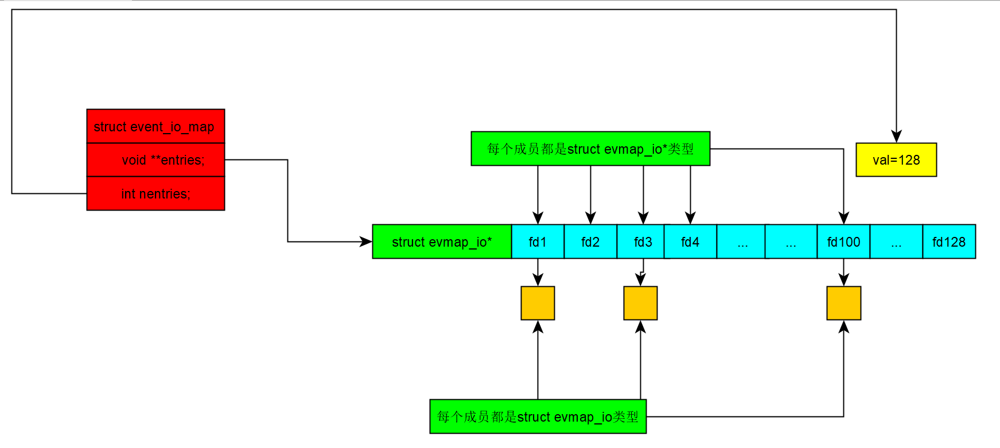

在调用任何libevent库方法之前，都要先创建一个event_base（事件发生器）。
一般调用函数event_base_new创建一个默认配置的event_base。
如果想要修改一些自定义的配置，可以调用相应的函数，函数event_base_new会调用函数event_config_new函数返回一个struct config的结构体，最后会调用event_base_new_with_config函数根据配置的config结构体，对event_base结构体进行初始化。
修改配置：
不使用特定的后端，调用event_config_avoid_method(struct config* config,char *avoid_method)函数将传入的不使用的特定的后端的字符串添加到config结构的双向链表中，可以调用多次去禁用多个后端。
指定IO复用应该满足的特性，调用函数event_config_require_features（struct config* config,int features)可以设置IO复用的特性，这些特性把包括EV_FEATURE_ET允许使用边沿触发（在Linux下只有epoll支持边沿触发），EV_FEATURE_FDS允许后端监听的是文件描述符，EV_FEATURE_O1添加，删除事件的时间复杂度为O(1),select和poll是不满足的,等。并不是所有的后端都支持这些标志的位运算组合。
设置event_base的属性，上面的event_config_require_features函数指定所选后端所满足的特性，而函数event_config_set_flags（struct config* config,int flag)函数设置event_base的属性，这些属性有EVENT_BASE_FLAG_NOLOCK,表示不为event_base分配线程锁等。
除此之外，还可以修改CPU的个数等。
现在便设置好config结构体。
在每个后端的实现文件中，libevent会为每个后端抽象出一个struct eventop的结构体，该结构体包括了后端的名字（我们要禁用特定后端会传入此字符串），如libevent下的select.c文件是对Linux下select多路复用的一个抽象，文件中定义了一个event_op结构体：
struct selectop {
int event_fds; /* Highest fd in fd set */
int event_fdsz;
int resize_out_sets;
fd_set *event_readset_in;
fd_set *event_writeset_in;
fd_set *event_readset_out;
fd_set *event_writeset_out;
};//每个后端的不共有特征的集合
const struct eventop selectops = {
"select",//多路复用名字
select_init,//初始化select函数
select_add,//将文件描述符或套接字或信号加入到IO复用中
select_del,//删除指定的fd
select_dispatch,//事件循环
select_dealloc,//释放event_base中有关select的部分
0, /* doesn't need reinit. *///如果我们需要在fork之后重新初始化event_base，则设置
EV_FEATURE_FDS,//这个后端可以支持的event_method_features的位数组
0,
};
这些函数的实现也都在select.c文件中。
由于libevnt是一个跨平台的开源库，集成了多个平台的IO复用，但是在指定的平台上，只能使用对应平台支持的后端。在Linux下./configure会检查系统环境，并生成一个event-config.h的文件，该文件中通过系统检测来定义一些宏，这些被定义的宏一般用于定义一些不同平台之间有所差异的变量。如在Linux下执行./configure,生成的event-config.h文件会定义EVENT__HAVE_SELECT，EVENT__HAVE_EPOLL，EVENT__HAVE_POLL这三个宏。libevent的核心文件event.c中最开始就会进行条件宏的判断：
#ifdef EVENT__HAVE_EVENT_PORTS
extern const struct eventop evportops;
#endif
#ifdef EVENT__HAVE_SELECT
extern const struct eventop selectops;
#endif
...
static const struct eventop *eventops[] = {
#ifdef EVENT__HAVE_EVENT_PORTS
&evportops,
#endif
#ifdef EVENT__HAVE_WORKING_KQUEUE
&kqops,
#endif
#ifdef EVENT__HAVE_EPOLL
&epollops,
#endif
#ifdef EVENT__HAVE_DEVPOLL
&devpollops,
#endif
#ifdef EVENT__HAVE_POLL
&pollops,
...
最后由于平台原因，只有如上所述三个宏被定义，因此最后只有三个后端的eventop结构体会被记录到全局数组eventops中。event-config.h文件除了对后端的控制外，还会对不同平台一些其他差异进行调整。
最后调用函数event_base_new_with_config（struct *config)返回一个event_base完成结构体event_base的创建。
该函数会创建一个event_base结构体，对其成员进行一系列的初始化，并将之前对config的配置引入，通过遍历全局数组和config的avoid链表来跳过指定的不使用的后端，直到找到第一个可使用的后端并使用它。（在全局数组eventops中所有的eventop结构都是按照IO复用的性能从高到排列的，所以使用的后但一定是除了我们指定不使用的后端外，此平台上性能最好的后端），最后event_base->evsel=eventop[i]，将后端结构体保存到event_base的成员evsel中。同时base->evbase=base->evsel->init(base)。调用对应后端的初始化函数对base并返回一个对应后端的特征结构体给event_base的evbase成员。
至此event_base的配置结束。
创建好event_base后，就会调用函数event_new或者event_assign来创建一个“事件”。
函数event_new会为一个event结构体分配堆内存并调用event_assign函数对此event进行初始化。
int event_assign(struct event *ev, struct event_base *base, evutil_socket_t fd, short
events, void (*callback)(evutil_socket_t, short, void *), void *arg)
该函数会将此event是否在全局链表global_debug_map中，并打印对应信息到日志文件。
并将fd,events和回调函数以及回调函数的参数赋给event的对应成员，并设置event->flags为EVLIST_INIT状态。
ev->ev_base=base;记录其所属的event_base
并进行判断，如果此fd为信号（events标志为EV_SIGNAL)，（就不能有标志EV_READ,EV_WRITE和EV_CLOSED标志，否则会出错）就将ev->closure=EV_CLOSURE_EVENT_SIGNAL。
如果为套接还设置了EV_PERSIST标志，则ev->ev_closure = EV_CLOSURE_EVENT_PERSIST;否则为EV_CLOSURE_EVENT。最后将此event加入到全局链表global_debug_map中。
#define EVLIST_TIMEOUT 0x01//event从属于定时器队列或者时间堆
#define EVLIST_INSERTED 0x02//event从属于注册队列
#define EVLIST_SIGNAL 0x04//没有使用
#define EVLIST_ACTIVE 0x08//event从属于活动队列
#define EVLIST_INTERNAL 0x10//该event是内部使用的。信号处理时有用到
#define EVLIST_ACTIVE_LATER 0x20
#define EVLIST_FINALIZING 0x40
#define EVLIST_INIT 0x80//event已经被初始化了
#define EVLIST_ALL 0xff//所有标志。这个不能取
接下来就会调用函数event_add将事件加入到event_base中。
函数int event_add(struct event *ev, const struct timeval *tv)
会调用函数int event_add_nolock_(struct event *ev, const struct timeval *tv,int tv_is_absolute)其中传入的tv_is_absolute为0，即传入的为相对时间，所以libevent默认event_add擦传入的是相对时间。如果传入的tv不为NULL即event为超时事件，则在小根堆中为其预留一个位置（小根堆为一个struct event**类型数组）。
这里暂时不分析超时事件的处理。
根据events标志调用不同函数：
如果标志为EV_SIGNAL,调用函数evmap_signal_add_，如果标志为EV_READ或EV_WRITE或EV_CLOSED位运算结果，则调用函数evmap_io_add_，这两个函数在Linux下的定义大致相同。
event_base有一个成员struct event_io_map io;和成员struct event_signal_map sigmap;
这两个结构体都被定义为
#define event_io_map event_signal_map
struct event_signal_map {
void **entries;
int nentries;
};
其中void **entries为一段分配的内存，这段内存中为nentries个evmap_io*的大小。其中nentries大于传入的套接字或文件描述符的整数值的大小，如果原来的nentries小于或等于传入的fd大小，则会将nentries加倍，直到大于传入的fd大小。很好理解这段内存是可扩展的，程序调用realloc函数在原基础上“加一段内存”。并更新event_io_map的void **entries和int nentries。接下来，通过判断fd的大小，将事件加入到evtries数组中。图示如下：

如果数组evmap_io的对应成员为NULL，则为其创建一段内存并指向它，并将其成员都初始化为0。
结构体struct evmap_io:
struct evmap_io {
struct event_dlist events;//struct event_dlist { struct event *lh_first; };
ev_uint16_t nread;
ev_uint16_t nwrite;
ev_uint16_t nclose;
};
一个fd可以有EV_READ,EV_WRITE,EV_CLOSE三个标志，nread,nwrite,nclose分别代表此fd对应的那个标志是否已经被使用（1为使用了，0为未被使用），在这里会判断传入的event如果使用同一fd已经使用的标志，则无法再次注册。所以对于同一个fd，他的三个标志每个只能被使用一次，只需要使用一次，即将其注册到可读，可写和关闭的队列，如果再出现一个此fd的时间，由于此fd已经添加到IO复用，只用将事件添加到fd的链表中即可。
接下来机会调用对应后端的add函数：
evsel->add(base, ev->ev_fd,old, (ev->ev_events & EV_ET) | res, extra) == -1)
对于select来说，就是更新最大文件描述符和将对应fd根据不同标志加入到对用的fd_set位数组中。
if (sop->event_fds < fd) {
int fdsz = sop->event_fdsz;//更新select最大文件描述符，扩展内存
if (events & EV_READ)
FD_SET(fd, sop->event_readset_in);
if (events & EV_WRITE)
FD_SET(fd, sop->event_writeset_in);//加入文件描述符到对应位数组
然后更新nread，nwrite，nclose。
要注意的是，一个event可以注册多次，除了可以对同一fd注册EV_READ,EV_WRITE,EV_CLOSE外。
一个event可以注册多个fd，即每个event也有自己的一个链表，链接着所有的关联的fd的struct evmap_io结构体。
最后将fd对应struct evmap_io结构加入到event链表。
同样一个信号可被多个event注册，一个event也可以注册多个信号。信号结构体：
struct evmap_signal {
struct event_dlist events;
};只有链表成员。
接下来回到函数event_add_nolock_:
将信号或fd加入到对应的数组后，event的flags标志就加上了EVLIST_INSERTED
同样信号也有对应注册过程，其被链接到event_base的struct event_signal_map sigmap成员的void **entries成员上。
接下来是超时事件的注册，在函数event_add_nolock函数最开始会检测参数tv的值，如果tv不为NULL，会在event_base的timeheap中为此超时event预留一个位置，应该知道的是：一个event可以被多次add，一个event可以注册为超时的同时，在超时事件过后会被激活，同时此event发生事件响应也会被激活一次，两种激活方式是互不影响。
如果event被设置了标志EV_CLOSURE_EVENT_PERSIST,这是在event_new是设置的，则直接设置此event的ev_io_timeout成员为超时值（记录相对时间）。（#define ev_io_timeout _ev.ev_io.ev_timeout,event-internal.h）
一个event可以被重复添加，如果在重复添加一个event时此event正处于激活状态，且为超时event，就将其从激活队列中删除。
超时事件的注册有两种方式，先说一种：
超时时间tv为在未来tv时间后超时，对于相对时间的记录需要相对时间和绝对时间来确定，将相对时间转换为绝对时间会更好处理。获取系统时间，并将tv相对时间转为绝对时间并保存到ev_io_timeout中，并将event加入到小根堆中。加入EVLIST_TIMEOUT标志。
最后将此事件在全局链表中标记为已添加状态。
这是第一种注册超时的方式。
第二种方式：
当存在大量具有相同超时时间的event被注册时，就会用到common-timeout。
首先要想使用ct，就必须自己调用函数：
const struct timeval * event_base_init_common_timeout(struct event_base *base,
const struct timeval *duration)
此函数接受一个公共超时值，也就时event的超时时间，再返回一个tv结构。
由于event_add只有两个参数，我们想要注册到ct而不是小根堆就必须向这两个参数加入某个特征。事实上，是在第二个参数tv中加入特征表示此event为ct。结构体tv有两个成员tv_usec是为微秒，所以其值最大应该为999999.只用20bit就可以存储，而其为32bit变量，就还剩12bit未使用，libevent就利用了着12bit来区分event的注册方式。
使用最高4bit作为标志位，标志它是一个专门用于ct的时间。
后8bit用来记录该超时时长在common_timeout_queues数组中的位置。
这也限制了common_timeout_queues数组的长度，最大为2的8次方，即256。
libevent还定义了一系列宏去按位与上usec取出这12bit。
COMMON_TIMEOUT_MICROSECONDS_MASK和MICROSECONDS_MASK 取出usec的前12bit。
COMMON_TIMEOUT_IDX_MASK取出前12bit的后8bit
COMMON_TIMEOUT_MASK取出前12bit的前4bit
#define COMMON_TIMEOUT_MAGIC 0x50000000为ct标志
static inline int
is_common_timeout(const struct timeval *tv,
const struct event_base *base)
{
int idx;
//不具有common-timeout标志位，那么就肯定不是commont-timeout时间了
if ((tv->tv_usec & COMMON_TIMEOUT_MASK) != COMMON_TIMEOUT_MAGIC)
return 0;
idx = COMMON_TIMEOUT_IDX(tv);//获取数组下标
return idx < base->n_common_timeouts;
}
该函数用来判断此tv是否为ct类型的tv
接下来就是去获取一个ct时间，也就是：
const struct timeval * event_base_init_common_timeout(struct event_base *base,
const struct timeval *duration)函数
此函数传入一个普通tv，返回一个带有ct标志的tv。
函数首先判断tv的usec的值，如果大于1000000，就进位为1s，并更新tv的值。
然后在event_base的struct common_timeout_list **common_timeout_queues;成员也就是common_timeout_queues数组中找是否已经存在此tv，如果存在就证明之前已经申请过此tv了，直接返回。
base的n_common_timeouts记录了当前event_base中common_timeout_queues的长度，限制为256，如果超过就返回，不能再注册。
base的n_common_timeouts_allocated为已经分配的common_timeout_queues的长度。此数组是动态分配的。分配了不一定会使用。如果分配的内存已被完全使用，即base->n_common_timeouts_allocated == base->n_common_timeouts，就再次分配，分配以16开始倍增。
如果此tv并没有被注册到common_timeout_queues数组过，就为此tv分配一个common_timeout_list结构：
struct common_timeout_list {
//超时event队列。将所有具有相同超时时长的超时event放到一个队列里面
struct event_list events;
struct timeval duration;//超时时长
struct event timeout_event;//具有相同超时时长的超时event代表
struct event_base *base;
其次结构体不仅记录了tv值，还会创建event：timeout_event。此event参数就是此ctl结构体，回调函数为common_timeout_callback。并设置ev->flags标志EVLIST_INTERNAL，优先级为0（最高，超时事件）。在回调函数中，有了这个指针，就可以访问events变量，即访问到该结构体上的所有超时event。于是就能手动激活这些超时event。
将tv记录到此结构，并加上ct标志，记录event_base到此结构，将其放入：base->common_timeout_queues[base->n_common_timeouts++] = new_ctl;返回tv，今后使用此tv注册的事件，就都会注册到common_timeout_queues对应的位置。最后返回带有ct标志的tv结构。
接下来在event_add函数中，其注册方式就改变了，调用event_add的此二个参数如果是一个经过event_base_init_common_timeout初始化的tv，就会采用ct注册，将其转为绝对事件加入标志位。并注册到event_base的common_timeout_queues数组对应下标的链表，函数event_queue_insert_timeout(base, ev);在此event的tv为ct或者普通时，会有不同行为：
static void
event_queue_insert_timeout(struct event_base *base, struct event *ev)
{
...
ev->ev_flags |= EVLIST_TIMEOUT;
if (is_common_timeout(&ev->ev_timeout, base)) {
struct common_timeout_list *ctl =
get_common_timeout_list(base, &ev->ev_timeout);//根据超时值从event_base的common_timeout_queues获取对应struct common_timeout_list *ctl
insert_common_timeout_inorder(ctl, ev);
} else {
min_heap_push_(&base->timeheap, ev);//加入小根堆
}
}
static void
insert_common_timeout_inorder(struct common_timeout_list *ctl,
struct event *ev)
{
struct event *e;
TAILQ_FOREACH_REVERSE(e, &ctl->events,
event_list, ev_timeout_pos.ev_next_with_common_timeout) {
//虽然有相同超时时长，但超时时间却是 超时时长 + 调用event_add的时间。
//所以是在不同的时间触发超时的。它们根据绝对超时时间，升序排在队列中。
//一般来说，直接插入队尾即可。因为后插入的，绝对超时时间肯定大。
//但由于线程抢占的原因，可能一个线程在evutil_timeradd(&now, &tmp, &ev->ev_timeout);
//执行完，还没来得及插入，就被另外一个线程抢占了。而这个线程也是要插入一个
//common-timeout的超时event。这样就会发生：超时时间小的反而后插入。
//所以要从后面开始遍历队列，寻找一个合适的地方。
...
if (evutil_timercmp(&ev->ev_timeout, &e->ev_timeout, >=)) {
TAILQ_INSERT_AFTER(&ctl->events, e, ev, //从队列后面插入
ev_timeout_pos.ev_next_with_common_timeout);
return;
}
}
//在队列头插入，只会发生在前面的寻找都没有寻找到的情况下
TAILQ_INSERT_HEAD(&ctl->events, ev,
ev_timeout_pos.ev_next_with_common_timeout);
}
超时时间却是 超时时长 + 调用event_add的时间,加入到common_timeout_queues数组的对应位置的链表的对应位置。
函数event_add还没完，如果此event注册到ctl的events链表且为第一个元素，将其加入 common_timeout_queues数组的同时，以绝对时间注册清空了ct标志的ctl结构的event事件到event_base，这样，ctl链表的自身成员注册到小根堆，此成员在超时时间后被激活，同时会调用回调函数：
static void common_timeout_callback(evutil_socket_t fd, short what, void *arg)
其参数为自身结构
此函数会遍历自身的event链表，即有着相同tv的但是有着不同绝对时间的event集合，并从第一个event开始判断是否超时，并手动激活这些event，然后从链表中删除。当然，如果第一次event还没超时，那么所有event都不会超时。第一个event的超时时间一定是最近的。
如果还有未超时的event，就将ctl的event再次加入到event_base，此次的超时时间为当前链表中第一个event的绝对超时值。
至此event_add就分析完了。
最后调用函数event_base_loop
该函数获取小根堆中第一个结构的tv（第一个tv为最小的），并根据tv-noew_time获取到一个相对时间用于io复用函数的超时值。
接下来根据当前时间，遍历小根堆是否有事件超时（遇到没有超时的就不用往后遍历了），并将超时事件添加到激活队列。
接下来调用io复用函数，io复用函数返回，会将激活的event加入到激活队列。
最后处理激活队列事件，如果事件带有PERSIST标志，则再次注册，
对于超时事件，无论是tv还是ct的tv，都记录到event结构这种，只需要判断tv的类型，就可以将event再次注册到对应超时队列中。
如果激活的event是ctl数组放到小根堆中的event，调用此event的回调函数会将遍历ctl成员的超时链表，并根据超时值来判断是否激活，同样链表中超时值递增排列。如果链表没处理完，即里面还有未超时的event，就更新ctl的event的tv并再次添加到小根堆，接下来loop循环会再次获取小根堆中最小的tv，将其作为io复用的超时值。再次遍历小根堆中event到激活队列，io复用返回，将event添加到激活队列。激活队列事件运行，如此往复。。。，值得注意的是，如果ctl中event并不是一个PERSIST的event，它会在此ctl链中有超时event时被添加到小根堆中。没有时，第一个event通过event_add到此ctl的链表时，ctl的event会被再次add。